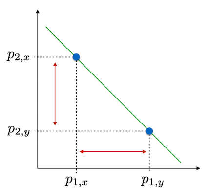
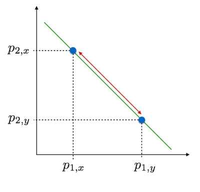

20 Genetic Distances

One can measure the relative distance between items based upon some basic assumptions. In Euclidean geometry, the underlying distance measures are based upon the triangle inequality. The same kinds of approaches are available in characterizing genetic separation, either among individuals or among locales. This chapter introduces some of the methodologies used in estimating genetic distances, how we analyze them, and how we portray our results in a graphical fashion amenable for interpretation.
Underlying most estimates of genetic distance are sets of geometric and/or evolutionary assumptions. There are many different metrics that could be estimated from our genetic data, many of which will tell us the same general story. However, there are specific features of our data that may make one kind of metric more appropriate than another type.
There are two main characteristics that control our ability to map collections of genotypes onto a real number line; Self identity and Symmetry. Self identity implies that the distance, \(\delta\), between an object (a single genotype or a collection of genotypes in a population) and itself must be zero: \(\delta_{ii}=0\). You are absolutely identical to yourself. Symmetry implies that the distance between objects is independent of the order in which we measure it; \(\delta_{ij} = \delta_{ji}\). This can be a more problematic assumption in some cases and when we examine estimation of ecological distances later, we will see this may not be the case.
If these two conditions are satisfied, the distance may be considered metric if (and only if) it satisfies the triangle inequality, \(\delta_{ij} \le \delta_{ik} + \delta_{kj}\). We’ve seen this relationship in Euclidean Geometry, the squared length of the hypotenuse is equal to the sum of the squared length of both legs in a triangle; \(z^2 = x^2 + y^2\).
Genetic distance itself is not the final product that allows us to gain inferences about underlying population genetic processes. Rather, it is the input into subsequent analyses. This section focuses first on how we estimate distances, depending upon the level of interest, and then highlights some approaches for visualizing and gaining inferences from the distance matrix itself. In later chapters, we return to the use of distance matrices when we examine network models and analyses based upon the idea of isolation models commonly used in modern population genetic analyses.
20.1 Individual Genetic Distance
Genetic distance can be estimated based upon differences at many levels, the most basal of which is among individuals. In the discussion of the individual genetic distances, the following genotypes will be used for illustrative purposes.
library(gstudio)
AA <- locus(c("A", "A"))
AB <- locus(c("A", "B"))
BB <- locus(c("B", "B"))
BC <- locus(c("B", "C"))
AC <- locus(c("A", "C"))
CC <- locus(c("C", "C"))
Locus <- c(AA, AB, AC, BB, BC, CC)
Locus## [1] "A:A" "A:B" "A:C" "B:B" "B:C" "C:C"20.1.1 Euclidean Distance
The most basic distance metric we can use would be Euclidean. Intuitively, we have a good idea about how this metric works as we use it every day. Euclidean distance is estimated as:
\[ \delta_{eucl} = \sqrt{\sum_{i=1}^\ell (p_{xi}-p_{yi})^2} \]
where \(p_{x•}\) is a vector of allele frequencies measured on the \(x^{th}\) individual. We can create these by translating the raw genotypes into multivariate data as we in the previous section on individual and population assignment.
mv.genos <- to_mv(Locus)
mv.genos## A B C
## [1,] 1.0 0.0 0.0
## [2,] 0.5 0.5 0.0
## [3,] 0.5 0.0 0.5
## [4,] 0.0 1.0 0.0
## [5,] 0.0 0.5 0.5
## [6,] 0.0 0.0 1.0and then using the dist() function that R has built-in to estimate \(\delta_{eucl}\)
D.euc <- dist( mv.genos )
D.euc## 1 2 3 4 5
## 2 0.7071068
## 3 0.7071068 0.7071068
## 4 1.4142136 0.7071068 1.2247449
## 5 1.2247449 0.7071068 0.7071068 0.7071068
## 6 1.4142136 1.2247449 0.7071068 1.4142136 0.7071068The output variable, D.euc, is of type
class(D.euc)## [1] "dist"which is definitely not a matrix object. It is a specific data type that is used for dealing with distance matrices. There are some analyses (variants of AMOVA and the Mantel test come to mind) that require the input matrix to be of type dist rather than of type matrix and don’t do the conversion for you directly.
Because most distance matrices have a zero diagonal (\(1^{st}\) requirement outlined previously) and symmetry (the upper diagonal is equal to the lower diagonal, the \(2^{nd}\) requirement), it is possible to save computer memory by only dealing with the data below the diagonal. Some analyses, such as an implementation of the Mantel test, require the use of dist objects instead of matrices.
It is easy to convert between the two object types as necessary.
D.euc <- as.matrix( D.euc )
D.euc## 1 2 3 4 5 6
## 1 0.0000000 0.7071068 0.7071068 1.4142136 1.2247449 1.4142136
## 2 0.7071068 0.0000000 0.7071068 0.7071068 0.7071068 1.2247449
## 3 0.7071068 0.7071068 0.0000000 1.2247449 0.7071068 0.7071068
## 4 1.4142136 0.7071068 1.2247449 0.0000000 0.7071068 1.4142136
## 5 1.2247449 0.7071068 0.7071068 0.7071068 0.0000000 0.7071068
## 6 1.4142136 1.2247449 0.7071068 1.4142136 0.7071068 0.0000000if you need to perform operations that are not available to dist objects (like matrix algebra).
20.1.2 AMOVA Distance
Another geometric interpretation of inter-individual distance is that of Excoffier et al. (2004), dubbed AMOVA distance. Smouse & Peakall (1999) provided the geometry of this relationship for diploid loci when discussing spatial autocorrelation. AMOVA distance can be visualized as the distance between vertices and mid-points on an equilateral triangle. Each segment is defined as having unit length and the distance is taken as the square of the distance between genotypes.

In R, we calculate it as:
D.amova <- genetic_distance( Locus, mode="AMOVA" )
rownames(D.amova) <- colnames(D.amova) <- as.character( Locus )
D.amova## A:A A:B A:C B:B B:C C:C
## A:A 0 1 1 4 3 4
## A:B 1 0 1 1 1 3
## A:C 1 1 0 3 1 1
## B:B 4 1 3 0 1 4
## B:C 3 1 1 1 0 1
## C:C 4 3 1 4 1 0For completeness, the previous figure should be drawn as a tetrahedron with the possibility of four alleles at a locus (allowing for distances between two heterozygotes that do not share any alleles). However, that is not an easy thing to draw for me… The only interesting distance you’ll need to think about (and perhaps grab a piece of paper and draw some triangles) is the distance between two two heterozygotes that share no alleles. I’ll leave it up to you to figure out that one (or use genetic_distance() for it).
20.1.3 Bray-Curtis Individual Distance
A distance metric that can be used to test differences among individuals or populations is that of Bray-Curtis. This distance is a transformation of Jaccard’s distance (see below) and is derived from an ecological ordination paper by Bray & Curtis (1957).
\[ D_C = 1 - 2\frac{\sum_{i=1}^\ell min(p_{X,i},p_{Y,i})}{\sum_{i=1}^\ell p_{X,i} + \sum_{i=1}^\ell p_{Y,i}} \]
This parameter is bound by 0 on the lower end, indicating that the two items being compared are identical and 1 at the upper end indicating complete dissimilarity. In R, this distance is defined in the vegan package for normal vegetation analysis and in gstudio for genetic data. There is some confusion in the literature as to how this distance metric should be calculated and it is implied by Yoshioka (2008) that at least some of the implementations are actually Czekanowski distance. At the time of this writing, there are some discrepancies between the distances that are calculated in different programs, whose names will be withdrawn to protect the innocent, so be aware. In the end, it is not fealty to a particular distance metric that is important in our analyses, it is the ability of some metric to describe the variation we see.
The implementation in gstudio uses allele counts across all loci.
20.1.4 Ladder Distance
For microsatellite loci, which have a specific step-wise mutation model, a genetic distance metric can be created based upon the number of repeat motif differences at genotypes rather than just binary same/different alleles (as in the AMOVA distance before). If the stepwise mutation process at microsatellite loci has played a significant role in shaping the structure on the landscape then we expect the kinds of spatial signal that is present in a ladder distance approach should differ from an approach that does not take into consideration the unique characteristics of this kind of locus. If they say provide very similar kinds of inferences then it is more likely that mutation, as a process, has not shaped the history to a large extent.
20.2 Population-Level Genetic Distances
If we are collecting data in such a way as to have pre-defined (or determined ex post facto) groups (populations or locales), several additional distance metrics can be derived. Below are a few of the more common ones that you will run into. It should be said that there is no dearth of genetic distance metrics available.
20.2.1 Czekanowski (Manhattan) Distance
Perhaps the simplest distance metric is that of Czekanowski—more commonly referred to as Manhattan distance. It is called Manhattan distance because it is a distance metric that is analagous to how you measure city-block distances. It is relatively difficult in a city to walk from one place to another in a straight line, rather we are forced to walk down this street, turn walk down that one, etc.

Population allele frequencies can be plot on the linear axis \(\sum_{i=1}^\ell p_i = 1\) and the distance between populations is the sum of the lengths separating each population on each of the \(\ell\) axis. This is calculated as:
\[ D_{Cz} = \frac{1}{2}\left| p_{i,x} - p_{i,y} \right| \]
where the pipes, \(|x|\), indicate taking the absolute value.
20.2.2 Rogers (Euclidean) Distance
Stepping up, slightly, in complexity, we get to Roger’s distance. This distance metric is roughly equivalent to Euclidean distance (and indeed in gstudio it is called euclidean).

Here we consider the allele frequencies as before but instead of taking the absolute values of the distances along each axis, we take the straight-line distance. This is estimated as:
\[ D_R = \sqrt{ \frac{1}{2} \sum_{i=1}^\ell\left( p_{i,x} - p_{i,y}\right)^2 } \]
This is a more common distance metric than that of Czkanowski and has been used in classification and taxonomy. There are a few drawbacks to this distance metric that stem from not being based upon population genetic theory. These may, or may not, be relevant to what you are doing with your data and where your data is from.
- This distance is not proportional to time of separation of populations. There is no drift component to it.
- This distance is not proportional to the number of base-pair substitutions, which may be important if you are looking at haplotype divergence.
- This distance may loose sensitivity with increased allelic diversity.
If you are using this metric at short time intervals, have loci of moderately diversity, or are not concerned about homology, this is a quick metric.
20.2.3 Nei’s Genetic Distance
One of the most common distance metrics used is that of Nei, and is estimated as:
\[ I = \frac{\sum_{i=1}^L\sum_{j=1}^{\ell_{i}} p_{ij,x}p_{ij,y}}{\sqrt{\sum_{i=1}^L\left(\sum_{j=1}^{\ell_i} p_{ij,x}^2\right)\sum_{i=1}^L\left(\sum_{j=1}^{\ell_i} p_{ij,y}^2\right)}} \]
but more commonly referred to using the transform:
\[ D_{Nei} = -\ln(I) \]
This metric is roughly linear in time, assuming a drift-mutation equilibrium. Populations with longer periods of separation will have larger values of \(D_{Nei}\). If you think that drift and mutation are significant features that have shaped the divergence of your populations, then this is an appropriate metric to use.
20.2.4 Conditional Genetic Distance
There is a final genetic distance that should be discussed here, Conditional Genetic Distance, derived from a network abstraction of genetic covariance by Dyer & Nason (2004). However, both the rationale and the approach that produce these measures of distance rely on some approaches that need further development and will be put off until a more complete treatment can be done in the chapter on population graphs.